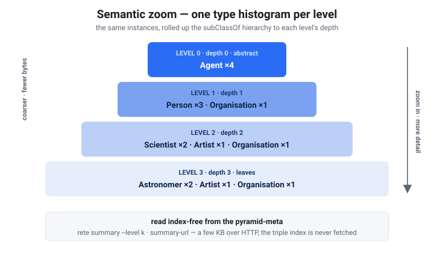
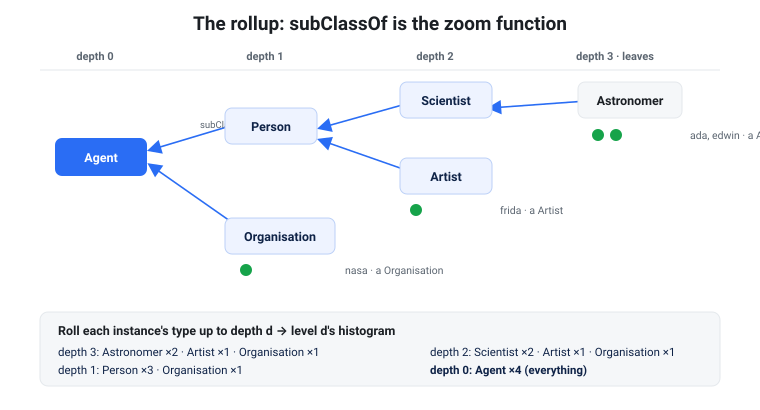
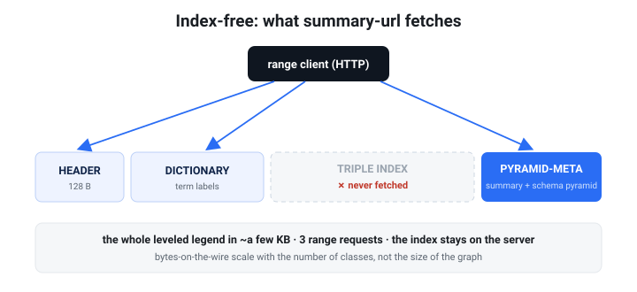
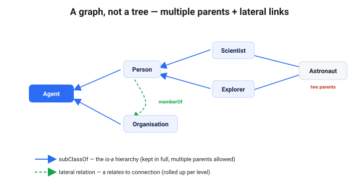

Semantic zoom — the schema pyramid
The one-paragraph pitch. Open any
.reteand ask "what kinds of things are in here?" — and get an answer that zooms. At a glance you see the broad strokes (Agent: 4k, Place: 8k); zoom one step andAgentresolves intoPersonandOrganisation; zoom again andPersonresolves intoScientist,Artist, … down to the leaf classes. It's a map legend with a zoom control, shipped inside the file, and a remote client reads the whole leveled legend in two or three small HTTP range requests — without ever touching the triple index. This is rete's "PMTiles for graphs," applied to types.
The schema pyramid is built automatically whenever your data carries an rdf:type
hierarchy. There is no flag to remember and nothing extra to host — it travels in
the file's pyramid section and is served over the same range-request transport as
everything else.

Each level is one type histogram. Read top to bottom and the same instances resolve from abstract classes into leaves — and the whole stack is fetched index-free, in a few kilobytes, over HTTP.
Why it exists
A knowledge graph you've never seen is opaque: you don't know which classes exist, how they relate, or where to start. The flat answer — "here are 200 classes, alphabetical" — is noise. What you actually want is to start coarse and drill down only where it's interesting. That's exactly what a web map gives you for geography; the schema pyramid gives it for ontology.
Three things make this work, and they're really one idea:
- The data's
rdfs:subClassOfaxioms define an abstraction hierarchy (Astronomer ⊑ Scientist ⊑ Person ⊑ Agent). - rete rolls every instance's type up that hierarchy to a chosen depth, once, at build time, and stores one type histogram per level.
- The whole thing lives in the pyramid-meta section, which range-reading clients fetch without the triple index — so it is index-free and instant, the cheapest tier of the three-tier exploration model.

The subClassOf chain is the zoom function: instances live at the leaves, and
rolling their types up to depth d produces level d's histogram — Astronomer
becomes Scientist becomes Person becomes Agent. Nothing is invented; the
ontology in the data does the work.
What you need in the data
| Ingredient | Predicate | Required? |
|---|---|---|
| Typed instances | rdf:type (a) | Yes — no types, no schema pyramid. |
| A class hierarchy | rdfs:subClassOf | Optional — without it the pyramid is a single flat level (= the Dataset Card's class list). |
The subClassOf axioms can come straight from your data, from an ontology file you
merge in at build time, or be inferred with rete build --materialize (the
RDFS/OWL-RL reasoner — see Reasoning). Multiple inheritance is
handled by picking a canonical (lexicographically smallest) parent so the rollup is
a deterministic tree.
Build it
Nothing special: it's part of the normal pyramid, so a plain rete build produces
it. Take this little graph — five classes in a subClassOf tree plus four typed
people/orgs:
# people.nt (N-Triples; prefixes shown for readability)
ex:Scientist rdfs:subClassOf ex:Person .
ex:Artist rdfs:subClassOf ex:Person .
ex:Astronomer rdfs:subClassOf ex:Scientist .
ex:Person rdfs:subClassOf ex:Agent .
ex:Organisation rdfs:subClassOf ex:Agent .
ex:ada a ex:Astronomer .
ex:edwin a ex:Astronomer .
ex:frida a ex:Artist .
ex:nasa a ex:Organisation .
ex:ada ex:memberOf ex:nasa .
ex:ada ex:knows ex:edwin .
ex:frida ex:knows ex:ada .
rete build people.nt -o people.rete
That's it — people.rete now carries the schema pyramid. (If your subClassOf
axioms live in a separate ontology, merge them in the same build:
rete build people.nt ontology.ttl -o people.rete. If they're only implied,
rete build people.nt --materialize -o people.rete infers them first.)
Use it
Browse every level at once
rete summary prints the community super-edge graph and then the schema pyramid —
one line per semantic level, coarse (abstract) at the top:
$ rete summary people.rete
…
schema pyramid — 4 level(s), 6 class(es) in the subClassOf hierarchy:
level 0 (depth 0, round 1): <http://ex/Agent>×4
level 1 (depth 1, round 0): <http://ex/Person>×3, <http://ex/Organisation>×1
level 2 (depth 2, round 0): <http://ex/Scientist>×2, <http://ex/Artist>×1, <http://ex/Organisation>×1
level 3 (depth 3, round 0): <http://ex/Astronomer>×2, <http://ex/Artist>×1, <http://ex/Organisation>×1
+ 3 per-community descriptor(s) for progressive zoom
Read it top to bottom and the zoom is visible: everything is an Agent (×4);
that Agent is Person ×3 + Organisation ×1; that Person is Scientist ×2 +
Artist ×1; that Scientist is Astronomer ×2. Counts conserve up the
hierarchy — each level re-partitions the same instances at a finer grain.
Zoom to one level
--level k prints just one level's type histogram (0 = coarsest / most abstract):
$ rete summary people.rete --level 0 # the big picture
schema pyramid level 0 — depth 0 (round 1), 1 class(es):
4 <http://ex/Agent>
$ rete summary people.rete --level 1 # one step in
schema pyramid level 1 — depth 1 (round 0), 2 class(es):
3 <http://ex/Person>
1 <http://ex/Organisation>
$ rete summary people.rete --level 3 # the leaves
schema pyramid level 3 — depth 3 (round 0), 3 class(es):
2 <http://ex/Astronomer>
1 <http://ex/Artist>
1 <http://ex/Organisation>
A viewer wires --level k to a zoom slider: render level 0 when zoomed out, fetch
deeper levels as the user drills in.
Over HTTP / S3 — the index-free payoff
This is the selling point. The schema pyramid lives in the pyramid-meta section, so
summary-url fetches it without downloading the file and without touching the
triple index — only the header, dictionary, and pyramid:

A range client pulls only the header, dictionary, and pyramid-meta. The large triple index never leaves the server — so the leveled legend costs the same few kilobytes whether the file is a megabyte or a gigabyte.
(The transcript above is from a larger published file — hence the bigger counts — to show the real at-scale byte cost: the whole leveled legend in 27 KB and 3 range requests, with the triple index untouched.)
$ rete summary-url https://host/people.rete
…
schema pyramid — 4 level(s), 6 class(es) in the subClassOf hierarchy:
level 0 (depth 0, round 5): <http://ex/Agent>×2847, <http://ex/Place>×1153
…
fetched 27337 of 161420 bytes in 3 range request(s) — index NOT fetched
The bytes-on-the-wire are bounded by the number of classes, not the size of the
graph — the same leveled legend costs roughly the same whether the file is a
megabyte or a gigabyte. Put the .rete on any range-capable host (S3, a CDN,
GitHub Pages) and a browser or CLI gets a zoomable type map for the cost of a few
kilobytes. See Dataset Cards → the three-tier model
for how this tier sits alongside the index-free card-url and the lazy
sparql-url tiers.
Read it programmatically
The Rust API exposes the pyramid index-free through SummaryView
(rete-core), which reads only the header + dictionary + pyramid ranges:
use rete_core::{SummaryView, SliceReader};
let view = SummaryView::open_ranged(&SliceReader::new(&bytes))?.unwrap();
for k in 0..view.level_count() {
let level = view.level_rollup(k).unwrap();
println!("level {k} (depth {}):", level.depth);
for (class, n) in &level.classes {
println!(" {n:>8} {class}");
}
}
// view.class_hierarchy : the subClassOf DAG with per-class depth
// view.descriptors : per-community descriptors (below)
Any RangeReader works here — back it with an HTTP client and you read the schema
pyramid straight off a URL.
A graph, not a tree — multiple parents and lateral links
A real ontology isn't a strict tree. Two things break the "every class sits in exactly one branch" assumption, and the schema pyramid keeps both:

1. Non-exclusive subClassOf (multiple inheritance). A class can be a subclass
of several others — Astronaut ⊑ Scientist and Astronaut ⊑ Explorer. The
shipped hierarchy keeps all parents, so it is a directed acyclic graph, not a
tree. (A single canonical parent — the lexicographically smallest — drives the
deterministic depth/rollup; the rest are preserved as cross-links you can
navigate.) On ClassNode you get parents: Vec<String> and canonical_parent().
2. Lateral connections (the non-is-a relations). Beyond "is-a", classes are
connected — Person memberOf Organisation, Person knows Person. The pyramid
rolls these relations up per level too, so each level is a small graph, not
just a histogram. Zoom out and the relations abstract along with the types:
$ rete summary people.rete --level 1 # concrete
3 <http://ex/Person>
1 <http://ex/Organisation>
relations at this level (2):
2 <http://ex/Person> --<http://ex/knows>-> <http://ex/Person>
1 <http://ex/Person> --<http://ex/memberOf>-> <http://ex/Organisation>
$ rete summary people.rete --level 0 # abstracted
4 <http://ex/Agent>
relations at this level (2):
2 <http://ex/Agent> --<http://ex/knows>-> <http://ex/Agent>
1 <http://ex/Agent> --<http://ex/memberOf>-> <http://ex/Agent>
Person memberOf Organisation becomes Agent memberOf Agent as you zoom out — the
connections are preserved and generalized, never dropped. So the answer to "can
the pyramid be non-exclusive and keep connections?" is yes, by construction:
it's a leveled multigraph over the ontology, not a leveled tree. On the API these
are view.level_links (Vec<LevelLinks>, each a Vec<ClassRelation>).
Per-community descriptors (progressive zoom)
Alongside the global levels, the pyramid ships a descriptor per community: its
dominant class, local type histogram, and — when the data has them — a geographic
bounding box (CRS84 lon/lat) and a temporal range. These let a client refine the
global picture locally — "what's in this region / this cluster?" — again without
fetching any triples. They're available on view.descriptors.
Status. The descriptors describe communities and ship in the index-free pyramid-meta today. The physical per-community triple tiles they're designed to annotate are a separate, in-progress storage step; until those land, a descriptor is a standalone summary of its community.
No hierarchy? It still works
If your data has types but no subClassOf, the pyramid degrades gracefully to
a single flat level — exactly the class histogram you'd get from the Dataset
Card — so rete summary --level 0 always answers. Add a hierarchy (or
--materialize) later and the levels appear automatically on the next build.
How the ontology is embedded in the format
The ontology isn't a sidecar — it is derived once at build time and written into the file's own sections, where range clients read it without the triple index. Three orthogonal structures are embedded, each answering a different question:
| Structure | Question it answers | Where it lives | Read by |
|---|---|---|---|
subClassOf DAG (non-exclusive, with depth) | is-a — how classes generalize | pyramid-meta (v2) | summary / summary-url |
| Per-level type + relation rollups | what & how, at each zoom | pyramid-meta (v2) | summary --level k |
| Per-community descriptors | what's in this cluster/region | pyramid-meta (v2) | SummaryView.descriptors |
class_links (leaf relation graph) | relates-to — the effective schema | the Dataset Card (metadata) | card / card-url |
| Community super-edges | co-occurrence — topological structure | pyramid-meta (v1) | summary / summary-url |
A few properties that make the embedding work:
- Self-contained. The schema pyramid stores class and predicate IRIs in its own string table, so it can be decoded without the dictionary — the ontology travels as plain text, not dictionary IDs.
- Index-free. Reading any of it never opens the triple index —
rete summary [--level k],summary-url,card-url, andSummaryViewkeep to the header + the small metadata/pyramid ranges. The index stays on the server. - Physically additive (pyramid-meta v2). The schema block is appended after the v1 summary and written only when the graph has types, so a typeless file is byte-identical to a v1 build and an older reader silently ignores the new bytes. See the format spec §7.4 for the exact byte layout.
- Provenance. The
subClassOfaxioms come straight from the data, from a merged ontology file, or fromrete build --materialize(the RDFS/OWL-RL reasoner). The pyramid never invents structure — it embeds the ontology that's already there. - Deterministic & bounded. Same input → byte-identical file (stable content hash, safe to cache). Levels (≤ 6), classes/relations per level, and descriptors are all capped, so the embedded ontology stays small regardless of graph size.
Cost vs benefit — is the pyramid worth it?
Measured honestly (see the benchmark), the two pyramidal structures have very different economics:
- The schema pyramid is bounded — its size and read cost track the ontology (classes/relations), not the graph, so it stays cheap (~tens of KB, ~20 ms read) at any scale. This is the structure that earns its keep for exploration.
- The community super-edge summary scales with the graph and adds build time
(Louvain), and it gives no benefit to node-selective lazy queries. If you only
serve selective SPARQL,
--no-pyramidis smaller and just as fast.
Rule of thumb: keep the pyramid when you want index-free overview/exploration;
drop it (--no-pyramid) when you only serve selective queries at scale.
When to reach for it
- Publishing a dataset people will explore cold — the schema pyramid is the zoomable legend that tells them what to ask.
- A browser/edge client that should show "the shape of the data" before running a single SPARQL query — render level 0 from a few KB, drill down on demand.
- Faceted / drill-down UIs — wire the levels to a type facet that starts abstract and refines as the user narrows.
If your data is untyped or has no class hierarchy, the payoff is smaller (a single flat level); everything else here still applies.
See also: Dataset Cards (the self-describing card + starter
queries that ride the same index-free path), Reasoning
(--materialize to infer subClassOf), and the format spec.